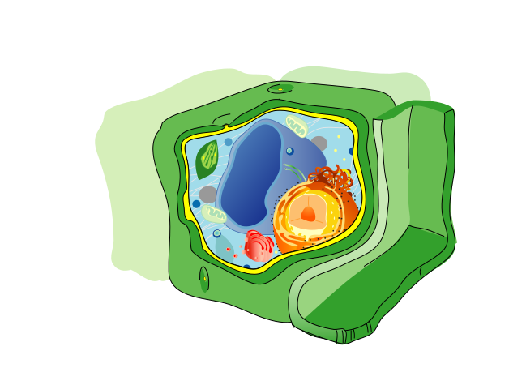

Grade 7 Science · Guided Notes Package · Alberta Curriculum 2007
Before you start this unit — no notes, no right or wrong answers. Write what you honestly think right now.
Keep this page. At the end of the unit, you will come back and read what you wrote here.
Learning target: I can state the three tenets of cell theory and identify plant cell structures visible under a light microscope.
| Term | Definition in your own words | One example |
|---|---|---|
| Cell theory | ||
| Cell wall | ||
| Cell membrane | ||
| Vacuole | ||
| Chloroplast | ||
| Nucleus |
Cell Theory — three core ideas that all biology is built on:
Before 1839, most biologists thought complex organisms were built from a mix of specialized tissues and simple materials. Schleiden (plants) and Schwann (animals) unified all of biology under one principle: everything living is cellular.
Plant cells under a microscope — key structures:

Plant cell structure — use the table below to identify and label each organelle. · Image: LadyofHats / Vivelefrat, Public Domain, Wikimedia Commons
| Structure | What it looks like | What it does |
|---|---|---|
| Cell wall | border; rigid | Provides and shape; made of cellulose |
| Cell membrane | Inside the cell wall | Controls what in and out of the cell |
| Central vacuole | Large central space (takes up ~90% of plant cell) | Stores , maintains cell pressure (turgor), stores waste |
| Chloroplasts | Green, oval bodies | Site of ; contain chlorophyll |
| Nucleus | Dark, round body | Controls cell activities; contains |
Plant cell vs. animal cell:
| Feature | Plant cell | Animal cell |
|---|---|---|
| Cell wall | ✓ present | ✗ absent |
| Large central vacuole | ✓ | ✗ (small vacuoles only) |
| Chloroplasts | ✓ (in green cells) | ✗ |
| Cell membrane | ✓ | ✓ |
| Nucleus | ✓ | ✓ |
Microscopy note: At light microscopy, you can see cell wall, cell membrane outline, central vacuole, nucleus, and chloroplasts (in green tissues). You cannot see individual molecules or most organelle structures.
Cover your notes. Answer from memory.
Self-check: How well do I know this section? ☐ I could teach it ☐ Getting there ☐ Not yet
Learning target: I can describe the functions of the root and shoot systems and explain how vascular tissue moves materials through a plant.
| Term | Definition in your own words | One example |
|---|---|---|
| Root system | ||
| Shoot system | ||
| Vascular tissue | ||
| Xylem | ||
| Phloem |
Two systems, one plant:
| System | What it includes | Main functions |
|---|---|---|
| Root system | roots, root hairs | , , |
| Shoot system | stem, leaves, flowers, fruit | , , |
Root system details:
Shoot system details:
Vascular tissue — the plant's transport system:
| Tissue | Carries | Direction | Think of it as |
|---|---|---|---|
| Xylem | water and dissolved | from to | supply pipes going up |
| Phloem | (sugars) made by photosynthesis | from to | distribution pipes going down |
Xylem and phloem together form the vascular system. "Vascular" comes from the Latin for vessel — the same root word used in cardiovascular (heart and blood vessels). A plant's vascular system is analogous to the circulatory system in animals, but it uses passive forces (capillary action, osmosis, pressure) rather than a pump.
Why vascular tissue is important in plant evolution: Early plants (mosses, liverworts) have no vascular tissue — they must remain to ground water. Vascular plants can grow because they can transport water up from the ground regardless of how far above the soil they are.
Diagram: label the parts below
Fig. — Plant anatomy. Label each blank box with the correct plant part. Xylem (green ↑) carries water up; phloem (amber ↓) carries glucose down.
Cover your notes. Answer from memory.
Self-check: How well do I know this section? ☐ I could teach it ☐ Getting there ☐ Not yet
Learning target: I can describe the process of photosynthesis including inputs, outputs, and its importance to ecosystems.
| Term | Definition in your own words | One example |
|---|---|---|
| Photosynthesis | ||
| Chlorophyll | ||
| Glucose | ||
| Carbon dioxide (CO₂) |
"Plants get their food from the soil through their roots." Why this fails: In 1648, Jan Baptist van Helmont planted a willow seedling in 90 kg of dry soil. After 5 years, the willow gained 74 kg of mass. The soil lost only 57 grams. Where did the 74 kg come from? Not the soil — mostly from and in the air. This experiment showed that plants build their mass from air, not soil. Soil provides minerals dissolved in water, but the food (energy) a plant runs on comes from photosynthesis.
The photosynthesis equation:
Fig. — Photosynthesis equation. Fill in the three blanks: where does CO₂ come from? Where does H₂O come from? Where is O₂ released?
Fill in the blanks:
Where does photosynthesis happen? In the of the parts of plants — primarily in .
Why photosynthesis matters to ecosystems:
Photosynthesis is the entry point of into almost every food chain on Earth. Producers convert energy into energy that all consumers depend on. Without photosynthesis, almost no life on Earth could survive.
A simple diagram — fill in the missing labels:
Fig. — Photosynthesis in the chloroplast. Complete the three blanks.
Cover your notes. Answer from memory.
Self-check: How well do I know this section? ☐ I could teach it ☐ Getting there ☐ Not yet
Learning target: I can describe sexual and asexual reproduction in plants and explain the advantages of each strategy.
| Term | Definition in your own words | One example |
|---|---|---|
| Sexual reproduction | ||
| Asexual reproduction | ||
| Pollination | ||
| Fertilization | ||
| Germination | ||
| Vegetative reproduction |
Two strategies:
| Strategy | How it works | Offspring are... | Advantage |
|---|---|---|---|
| Sexual reproduction | Two parents combine | Genetically from parents | variation; adaptation to change |
| Asexual reproduction | One parent, no sex cells | Genetically to parent | ; rapid colonization of space |
Sexual reproduction — the flower's job:
Flowers are structures, not decoration. Their appearance, colour, and scent evolved to attract .
| Flower part | Function |
|---|---|
| Stamen (anther + filament) | Produces |
| Pistil (stigma + style + ovary) | Receives pollen; contains |
| Petals | pollinators |
| Sepals | Protect flower bud |
Pollination = transfer of pollen from to of the same species. Agents: wind, bees, butterflies, birds, bats.
Fertilization = pollen reaches the egg → forms → develops into a seed inside the , which becomes fruit.
Seed dispersal strategies:
| Method | Adaptation | Example |
|---|---|---|
| Wind | lightweight, wings or fluff | |
| Animal (eaten) | nutritious fruit; seeds survive digestion | |
| Animal (hitchhike) | hooks or burrs | burdock |
| Water | buoyant | coconut |
| Mechanical | pod explodes |
Asexual (vegetative) reproduction — no flowers needed:
| Method | How it works | Plant example |
|---|---|---|
| Runners (stolons) | horizontal stems send out new plants | |
| Bulbs | underground modified stem with stored food | tulip, garlic |
| Tubers | underground stem that stores starch | |
| Cuttings | stem piece roots when placed in soil |
"Cloning and asexual reproduction are unnatural — only done in a lab." Why this is wrong: Vegetative reproduction is a completely natural strategy used by hundreds of plant species. Strawberry runners, aspen groves (which are often one connected organism), and potato tubers all reproduce asexually in the wild. Lab cloning of plants is an extension of a strategy plants evolved millions of years ago.
Cover your notes. Answer from memory.
Self-check: How well do I know this section? ☐ I could teach it ☐ Getting there ☐ Not yet
Learning target: I can identify crops grown for food and fibre in Alberta and describe their uses before and after processing.
| Term | Definition in your own words | One example |
|---|---|---|
| Food crop | ||
| Fibre crop | ||
| Processing | ||
| Monoculture |
Alberta is a major agricultural province:
| Crop | Category | Before processing use | After processing use |
|---|---|---|---|
| Wheat | Food — grain | flour → bread, pasta | |
| Canola | Food — oilseed | canola oil, biodiesel | |
| Barley | Food — grain | animal feed | |
| Peas/lentils | Food — pulse | protein powder, food | |
| Flax | Food + fibre | linseed oil; linen fabric | |
| Hemp | Food + fibre | seeds (edible) |
Alberta statistics:
Monoculture = growing a single crop species over large areas. Advantages: , . Disadvantages: , .
Cover your notes. Answer from memory.
Self-check: How well do I know this section? ☐ I could teach it ☐ Getting there ☐ Not yet
Learning target: I can explain selective breeding and genetic modification and evaluate their effects on agriculture and biodiversity.
| Term | Definition in your own words | One example |
|---|---|---|
| Selective breeding | ||
| Genetically modified organism (GMO) | ||
| Biotechnology |
Selective breeding: Humans choose plants with traits and breed only those plants. Repeat over many generations. Results in dramatic changes over thousands of years. Example: wild mustard → cabbage, broccoli, kale, cauliflower, Brussels sprouts (all the same species, selectively bred for different traits).
Genetic modification (GMOs): Scientists directly specific genes — inserting, removing, or altering sequences in the DNA. Faster and more precise than selective breeding, but requires laboratory techniques.
| Technology | Timeline | Example | Alberta relevance |
|---|---|---|---|
| Selective breeding | Thousands of years | High-yield wheat varieties | All Alberta crop varieties have been selectively bred |
| GMOs | Since ~1990 | Canola with herbicide resistance | ~95% of Alberta canola is GMO |
Common GMO modifications in Alberta crops:
Evaluating biotechnology — multiple perspectives:
| Perspective | Concern or support |
|---|---|
| Agronomist (crop specialist) | |
| Ecologist | |
| Consumer | |
| Indigenous farmer |
This is a contested topic. Scientists, farmers, consumers, and Indigenous communities have genuinely different values that lead to different conclusions — even when they agree on the facts. Recognising this is part of scientific literacy.
Cover your notes. Answer from memory.
Self-check: How well do I know this section? ☐ I could teach it ☐ Getting there ☐ Not yet
Complete this page from memory — notes closed. Then open your notes and check.
1. Draw and label a plant cell. Include at least 5 structures and write the function of each.
2. Write the photosynthesis equation in words (not symbols). For each input and output, identify where it comes from or where it goes.
3. Fill in this table from memory:
| Concept | My explanation |
|---|---|
| Three tenets of cell theory | |
| Xylem vs. phloem | |
| Why plants aren't getting food from soil | |
| Sexual vs. asexual reproduction | |
| Selective breeding vs. GMOs |
4. A farmer in Alberta wants to grow a crop that requires less water as the climate gets drier. Recommend a biotechnology approach (selective breeding or GMO), explain how it would work, and identify one potential risk.
5. Go back and read your Pre-Knowledge Check on the first page.